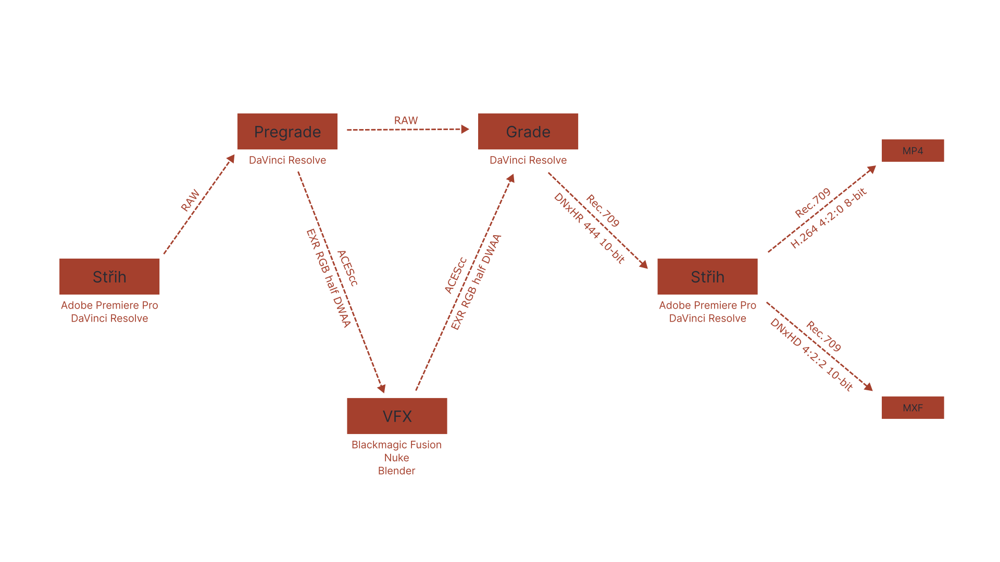
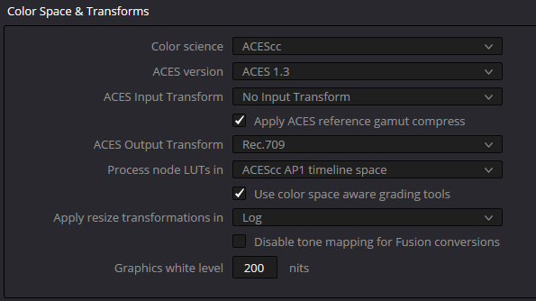
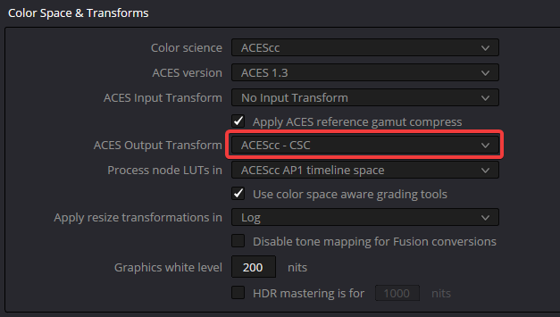
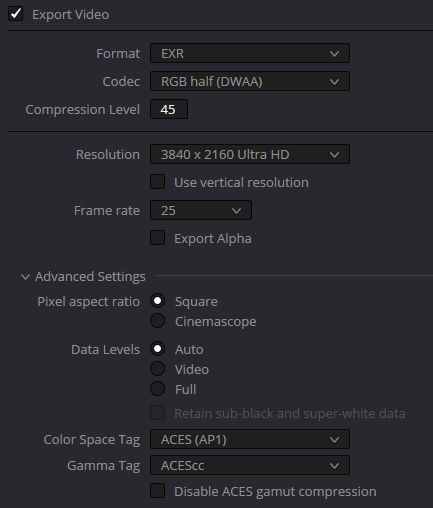
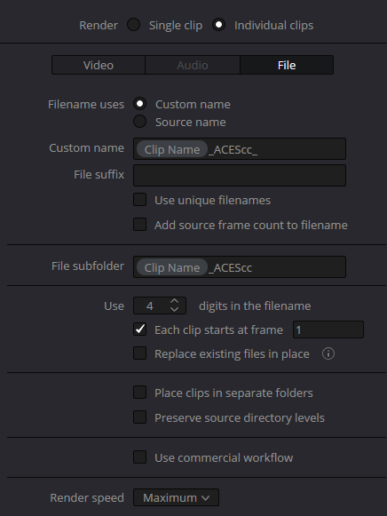
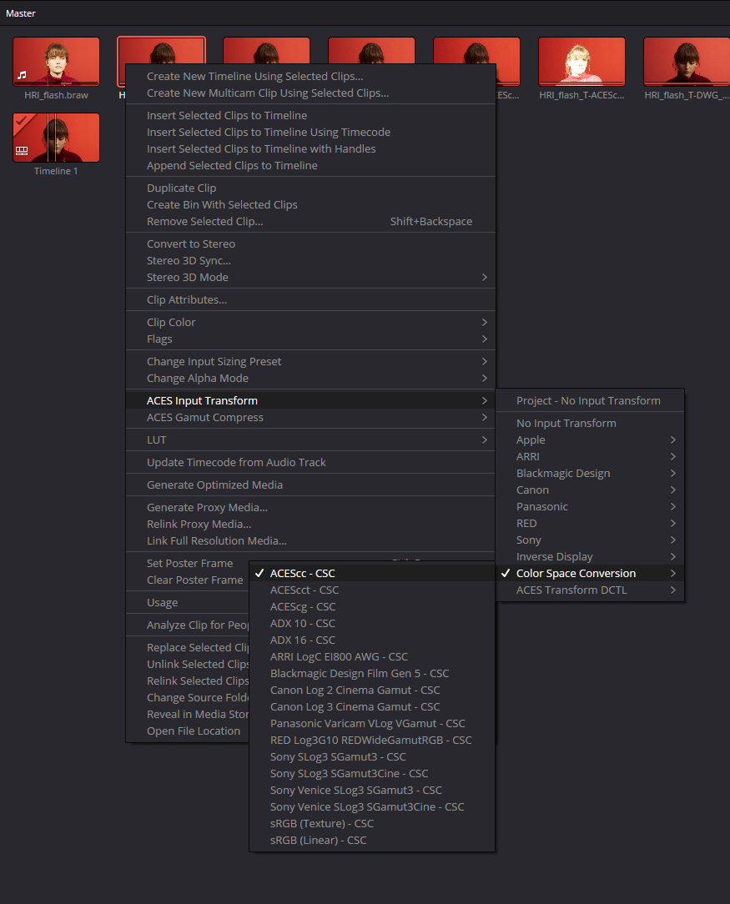
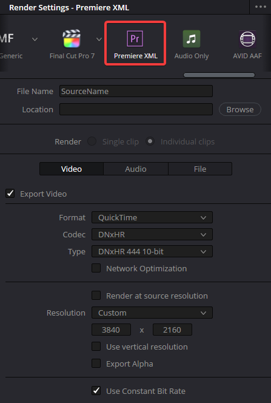

Verze 01.01
PDF verze ke stažení
Úvod
- vše vychází z mých vyvíjejících se znalostí o problematice, budou další verze - Filip Šotola (fili5h@protonmail.com)
- změny oproti předešlé verzi jsou uvedeny v changelogu
- limitace jsou uvedeny na konci, pokud se někomu chce některé problémy řešit, feel free to share
- pro větší přístupnost jsou části tohoto dokumentu zjednodušené, tyto části jsou upřesněny ve vlastní sekci
- pipeline by měla umožňovat zachování maximálního množství obrazových informací po co nejdelší dobu postprodukce při smysluplných objemech dat
- hlavním problémem je převod RAW video dat do formátu, na kterém mohou probíhat VFX
- pro color management je zvolený ACES
Stručný přehled

- po lock cutu kameraman provede pregrade, ve kterém udělá úpravy závislé na RAW a případné razantní barevné změny
- záběry pro VFX se exportují jako EXR v ACEScc
- VFX si záběry linearizuje do ACEScg a odevzdává je zpět ve stejném formátu, jako dostalo
- grade probíhá v ACEScc s Rec.709 náhledovou LUTkou
- zpět do střižny se data vrací v DNxHR 444 10-bit v Rec.709 společně s XML soupiskou
Pregrade
- po lock cutu je potřeba provést barevné úpravy, které využívají funkce RAW videa (Highlight Recovery), protože po tomto kroku, už záběry pro VFX nebudou v RAW
- dále pak razantní grade, který by komplikoval práci VFX, by měl být proveden předtím - day to night
- v tomto kroku už řešíme nastavení ACES v DaVinci Resolve, vypadá takto:

- zde není cílem stylizace obrazu, jen barevná korekce - zbytečný grade by mohl snižovat flexibilitu
- data pro VFX jsou v ACEScc colorspace, který se musí v Resolvu nastavit:

- formát dat pro VFX je EXR RGB half s DWAA kompresí:

- vzhledem k tomu, že se jedná o EXR sekvenci, vyplatí se správně nastavit, kam se budou klipy exportovat

VFX
- pro linearizaci je vhodné převést na prostor ACEScg, který má stejný gamut jako ACEScc, ale lineární gammu
- pokud se ACEScg z nějakého důvodu exportuje, musí se použít 32-bit formát aby se neořezaly světlé části
- na obraz se díváme skrz Rec.709 color space transform
- data pro grade jdou pak zase v EXR RGB half s DWAA kompresí v ACEScc
Grade
- Resolve je nastavený stejně jako v pregradu:
- u většiny klipů, co nejsou v RAW, je potřeba specifikovat color space, aby proběhla konverze do ACEScc:

- grade opět probíhá pod Rec.709 LUTkou
- klipy s VFX by měly barevně sedět s RAW klipy a je možné mezi nimi kopírovat grade
- nabarvené záběry zpět do střižny jsou exportovány společně s XML ve formátu DNxHR 444 10-bit:

Skládání a export
- nabarvené záběry jsou už se zapečeným Rec.709, ve kterém se ve škole odevzdávají filmy, není proto potřeba žádná barevná konverze
Upřesnění
- ACES obecně je jako intermediate color space zvolen díky své univerzálnosti
- nedává smysl postavit pipeline na žádném color space od Blackmagicu, protože by mohl být problém s převodem dat z jiných kamer a programů, které ho nepodporují
- z tohoto důvodu není pro grade použit DaVinci Wide Gamut Intermediate
- když mluvíme o Rec.709 LUTce, jde ideálně o ACES Rec.709 ODT implementované v Resolvu, anebo v jiných programech pomocí OCIO
- pregrade je nutné zlo, protože jsou situace, kdy je potřeba využít speciální funkce RAW videa, o které se konverzí pro VFX přijde
- často nemusí být ani potřeba, zpomaluje předání dat po lock cutu do VFX
- konverze z kamerového colorspace do ACEScc s náhledem přes Rec.709 nám poskytuje dobrý základ pro grade, který imituje reálný obraz na place bez ořezu gamutu
- Aces Input Transform v nastavení projektu je výchozí input transform, který se použije, když Resolve neví, co použít -> dává smysl případně nastavit na ACEScc / Rec.709 podle toho, jaká další data do střižny chodí
- Use color space aware grading tools znamená, že pro některé Resolve efekty (klíčování) se interně převede ACEScc do koukatelnějšího obrazu a zpět, aby správně fungovaly - nemělo by mít vliv na integritu dat
- EXR half má dostatečnou bitovou hloubku (16-bit), aby pokryl log bez ořezu světlých částí, proto do něj exportujeme ACEScc, který má logaritmickou gammu
- DWAA je ztrátová komprese pro EXR, která při výchozím nastavení na level 45 produkuje prakticky identický obraz s přibližně 6x menší velikostí souboru oproti nejefektivnější bezztrátové kompresi (PIZ)
- DWAB je varianta stejného algoritmu, která by měla být méně vhodná pro čtení v Nuku - netestováno
- jedná se o efektivnější kompresi, než je ve formátu DNxHR, který by jinak mohl být alternativou
- oproti BRAW jde ale o 6x větší datový tok, nicméně u některých filmů, kde se plýtvalo daty, by mohlo být výhodnější pro předávání dat do gradu celý lockcut vyexportovat jako tyto EXR sekvence
- export více EXR sekvencí je trochu bolestivý kvůli množství vzniklých souborů
- Resolve nejspíš nepodporuje vlastní číslování klipů při exportu, zde to lze obejít, že se v timeline pojmenují klipy ručně a pak se použije proměnná
%Clip Name v názvu souboru
- jinak existují nástroje pro hromadné přejmenování souborů (PowerToys, Total Commander)
- dobrý zvyk je psát color space do názvu souboru, některé programy z toho dokonce samy pak nastaví input transform
- linearizace ve VFX by se ve většině případů měla obejít bez reexportu EXR do ACEScg - děje se interně v compositing programu
- 32-bit se obecně doporučuje pro lineární gammu, je ale možné, že pro méně přepálené záběry by stačilo 16-bit
- většina klipů, co kameraman barví, je stále RAW, protože paradoxně jsou relativně malé
- v EXR jsou jen věci z VFX
- DNxHR 444 12-bit v Quicktime je mnohem lepší alternativa k RGB / YUV 422 Uncompressed, které se také používá pro cestu z Resolvu do Premiere Pro - neztrácí barvy a je menší
- EXR sekvence by byla ještě menší, ale nejde jí zvolit v Premiere XML presetu v Resolve a s Quicktime klipy se lépe pracuje
Limitace, prostor pro zlepšení
- v tuto chvíli pracujeme jen s Blackmagic RAW, ostatní RAW formáty nejsou otestované
- v dalších verzích nelze vyloučit možnost generování náhledové LUTky po pregradu, ale pro day to night se asi zapečení gradu nevyhneme
- Resolve dovoluje zapsat do metadat údaje o barevném prostoru, ale u EXR to nefungovalo, respektive Resolve pak nedetekoval správný colorspace
- pro správné chování CGI v gradu bude nejspíš potřeba zprovoznit wide gamut render v Blenderu
- obecně je potřeba prověřit, jak se různé compositing programy chovají k barvám, aby u VFX nedošlo ke ztrátě
- DNxHR 444 10-bit je dost pravděpodobně zbytečně velký formát na přenos zpět do střižny vzhledem k technickým podmínkám finálního exportu
- je možné, že ořez do Rec.709 není vhodný pro případnou konverzi do DCP, ale škola očekává na konci DNxHD s Rec.709 obrazem
Changelog
- komprese dat pro VFX změněna z DWAB na DWAA
- colorspace se nyní udává v názvu souboru před číslo framu, ne do suffixu, aby nebyl problém s detekcí sekvence některými programy (DJV)